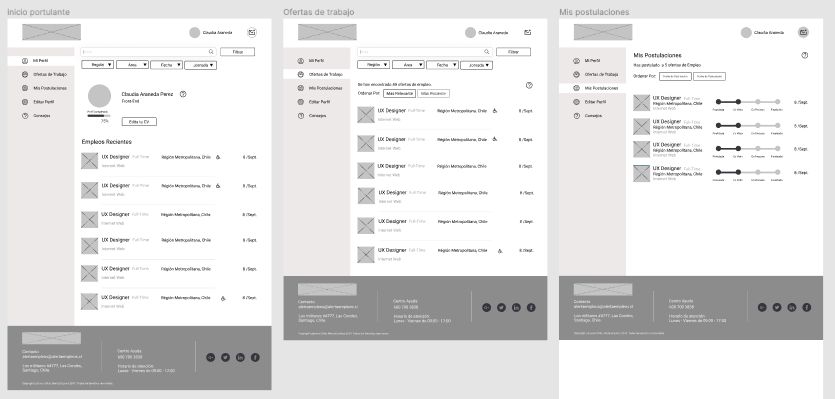
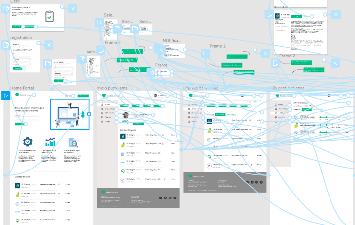
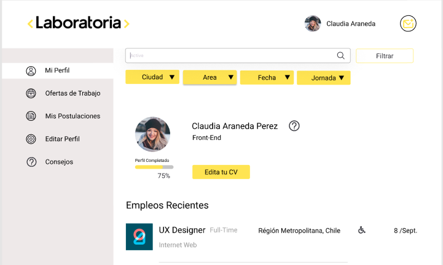

Alerta Empleos
Agosto-Septiembre/2019
Webpage
Proyecto: Alerta Empleos
Equipo :Aymara, Fernanda, Andrea y María José
Función :UX/UI
Re-serch, User Persona, testeos, guía de estilos, prototipado.
Empresa
Laborum es un portal de empleo con 20 años de trabajo en Chile, 4 millones de usuarios, cerca de 10 mil empresas como clientes y presencia en 7 países en Latinoamérica. Hace 5 años pasan a ser parte de un grupo argentino Navent. Hoy surge la necesidad de mejorar sus servicios, específicamente el dirigido a sus clientes sin contrato comercial a través de “Alerta Empleos”. Se necesita dar más herramientas para poder llevar seguimientos de los candidatos y contrataciones, sobretodo al ir dirigido a Fundaciones, Instituciones, Universidades, OTEC, OMIL y Municipalidades, que deben rendir cuentas de su efectividad al Estado.
Problema
El problema principal es que las instituciones que cuentan con el servicio no están usando “Alerta Empleos” y se necesita a llegar a mas empresas para lo usen activamente, enfocándose en las OTEC, OMIL y Universidades. Que lo vean como una herramienta útil para buscar candidatos. También encantar a los postulantes para que usen estos portales para buscar empleos.
Solución
Crear una plataforma web para que las instituciones, empresas y postulantes puedan ver y ordenar las diferentes ofertas de trabajo. Nuestro trabajo se enfocó en los postulantes para poder mejorar la experiencia del proceso de postulación desde la creación del perfil hasta el seguimiento de las postulaciones.
Proceso de Diseño
Nos guiamos por el método Design Thinking, para poder enfocarnos en el usuario. El objetivo es que de una forma ordenada poder encontrar las soluciones necesarios para el problema.
Empatizando
Para comenzar a entender la solicitud del cliente hicimos varias reuniones para para que nos dieran a conocer sus requerimientos como empresa y además indagar sobre sus oportunidades de mejora.
Luego de estos tuvimos contacto con variados tipos de usuarios entre ellos: reclutadores que trabajan con “Alerta Empleos” , reclutadores que ya no usan “Alerta Empleos”, postulantes de cargos “junior” y postulantes de OMILs.
Tambien fue necesario realizar un Benchmark para ver por que las empresas estaban prefiriendo otros portales de empleos.
Aprendizajes de esta etapa:
- Alerta Empleos debe tener una funcionalidad básica, para que los incentive a participar tanto empresas como a postulantes.
- Las postulaciones de ambas plataformas se vinculan a perfil de Laborum.
- Al momento de publicar, buscan que este bien detallado el cargo, la especialidad técnica y la descripción de la empresa.
- Buscan algún sistema para poder ordenar la información de los postulantes, para que más de una persona pueda entender el orden.
- Laborum hace 2 años dejó de ser competitivo ya que no tiene suficientes postulantes.
- El diseño debe ser encargado por cada empresa
- Los usuarios reclutadores no pueden personalizar su perfil.
Definiendo
Luego del proceso de empatización nos dimos cuenta que enfocaríamos nuestra propuesta en los postulantes. Por lo cual en el equipo de trabajo nos dividimos en células para poder abarcar toda la plataforma.
En este mismo proceso se hizo un journey map y user personas para visualizar los verdaderos dolores de los usuarios.
Aprendizajes:
- El principal dolor se identifica en el momento de no poder usar el mismo perfilen los diferentes portales.
- Los usuarios no pueden hacer seguimiento de sus postulación.
- Necesitan consejos de como mejorar sus perfiles y al momento de postular.

Ideando
Después del proceso de definición y de empatización se pudo pasar al proceso de ideación, donde se juntaron todas las ideas de los anteriores procesos.
Ordenamos toda la información recopilada, la agrupamos en post it para reconocer aprendizajes generales y poder reconocer insights y how might we?
Principales Ideas
- Enfocar la pagina principal en el chip.
- Pestaña de empresas con información relevante de contacto más las experiencia con las empresas con las que trabajan actualmente.
- Beneficios del Chip
- Experiencias atractivas con personas reales.
- Entregar la compatibilidad de los Smart phone en la página web.
Luego de esto nos pudimos enfocar en las principales problemáticas y desarrollar la siguiente etapa.

Prototipando y Evaluando
Prototipo de Baja
Estos procesos se hicieron de forma conjunta para poder interactuar mejor con el usuario.
Luego de realizar un Card sorting y Site Map, se realizaron sketchs, con los cuales pudimos llegar a un prototipo de baja calidad.
Este prototipo de baja calidad, se realizo previamente al de alta fidelidad para poder realizar de forma rápida las iteraciones.
Prototipo de Alta
Como parte de la propuesta de mejoras EMERID, desarrollamos un prototipo de alta fidelidad con la herramienta Figma , que servirá para mejorar la experiencia de los usuarios con la página web, desarrollando el flujo de información de la página y la rapidez de la compra de los nuevos productos, sin perder el enfoque de mantener la conexión de EMERID con las empresas que deseen colaborar con ellos.
Luego se testeo este prototipo con 5 usuarios de lo cual se sacaron los siguientes aprendizajes:
- Simplificar el proceso de compra de productos.
- Los colores y fuentes llaman la atención de los usuarios.
- La información es entendible para los usuarios.
- Los usuarios logran realizar la compra de los productos.
Análisis Final
Realizando este proyecto aprendimos a interactuar con usuarios muy diferentes y específicos.
Fue un proceso de investigación muy interesante y uno de los principales aprendizajes fue reconocer el potencial de los productos y saber como mostrar el potencial de estos productos en la web.
